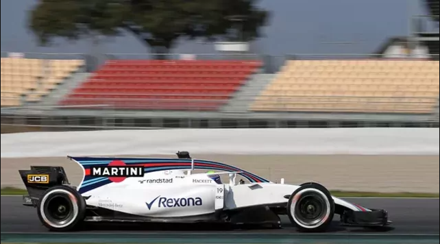

Resumo: Este texto foca nas inovações das pistas, desde a revolução aerodinâmica e o aumento da segurança, até chegar aos motores híbridos, uso de dados e ao futuro sustentável do esporte.
Se nas primeiras décadas do automobilismo o foco era puramente a coragem do piloto e a força bruta do motor, a partir dos anos 1960 o esporte sofreu uma metamorfose impulsionada pela ciência. As pistas de corrida deixaram de ser apenas palcos de entretenimento e se transformaram nos laboratórios de pesquisa e desenvolvimento mais rápidos e caros do planeta.
Durante muito tempo, os carros de corrida tinham o formato de "charutos" deslizantes. Nos anos 1960, engenheiros geniais como Colin Chapman (fundador da Lotus) perceberam que o ar não era apenas algo a ser cortado, mas uma ferramenta a ser utilizada.
Os motores foram movidos da frente para a parte traseira (otimizando o centro de gravidade), e os primeiros aerofólios foram instalados. Eles funcionavam como asas de avião invertidas: em vez de fazer o carro decolar, o fluxo de ar empurrava o veículo contra o chão (o chamado downforce), permitindo que os carros fizessem curvas em velocidades até então consideradas impossíveis pela física tradicional.
Os anos 1980 e o início dos anos 1990 marcaram a brutal "Era Turbo". Os motores atingiam potências insanas, ultrapassando os 1.000 cavalos em treinos de classificação. Paralelamente, os computadores invadiram os boxes. Suspensões ativas (que ajustavam a altura do carro automaticamente), controles de tração e freios ABS transformaram os carros em supercomputadores sobre rodas. Foi a era de ouro de rivalidades técnicas e de pilotagem, imortalizadas por nomes como Ayrton Senna, Alain Prost e Nelson Piquet.
Até 1994, o perigo de morte era um risco tragicamente romantizado no automobilismo. Porém, as mortes de Roland Ratzenberger e Ayrton Senna no GP de San Marino forçaram a FIA a mudar radicalmente a filosofia de todo o esporte. A performance pura deixou de ser o único objetivo.
Iniciou-se uma revolução invisível: crash tests rigorosos foram impostos, as células de sobrevivência (cockpits) passaram a ser construídas com compostos avançados de fibra de carbono e Kevlar, e o design das pistas foi alterado com áreas de escape mais amplas. Mais recentemente, em 2018, a introdução do sistema Halo (uma barra de titânio acima da cabeça do piloto) provou o compromisso moderno com a vida, salvando diversos competidores de acidentes impressionantes nos últimos anos.

Hoje, o automobilismo deixou de ser puramente mecânico para se tornar orientado a dados e eficiência. Um carro moderno da F1 ou do Mundial de Endurance (WEC) gera milhares de terabytes de telemetria por corrida, analisados em tempo real por engenheiros baseados nas fábricas do outro lado do mundo.
O passo definitivo para o futuro ocorreu em 2014, com a chegada da Era Híbrida. Os ruidosos motores a combustão tradicionais passaram a trabalhar em conjunto com Unidades de Potência Elétrica (ERS). Esses sistemas recuperam a energia cinética dissipada nas frenagens e o calor do escapamento, transformando-os em eletricidade e injetando potência limpa no motor. Categorias como a Fórmula E nasceram para levar o automobilismo à fronteira dos motores 100% elétricos.
A evolução continua. A busca atual nas pistas por eficiência energética, combustíveis sustentáveis de laboratório e segurança extrema garantirá que a tecnologia forjada a 300 km/h hoje chegue, em poucos anos, aos carros de passeio estacionados nas nossas garagens.